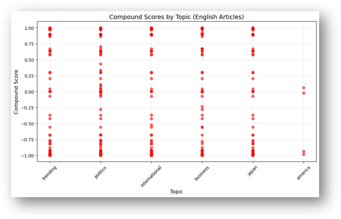
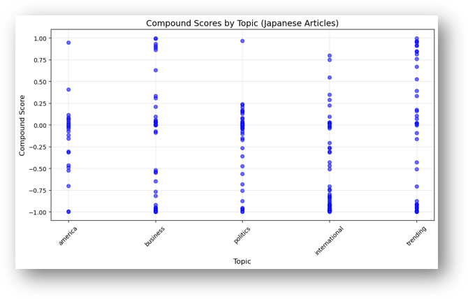
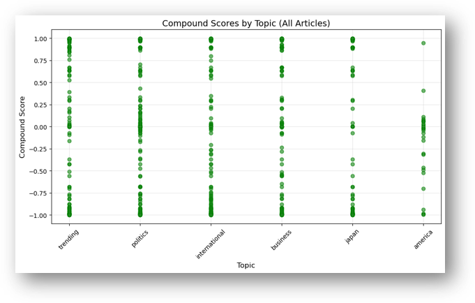
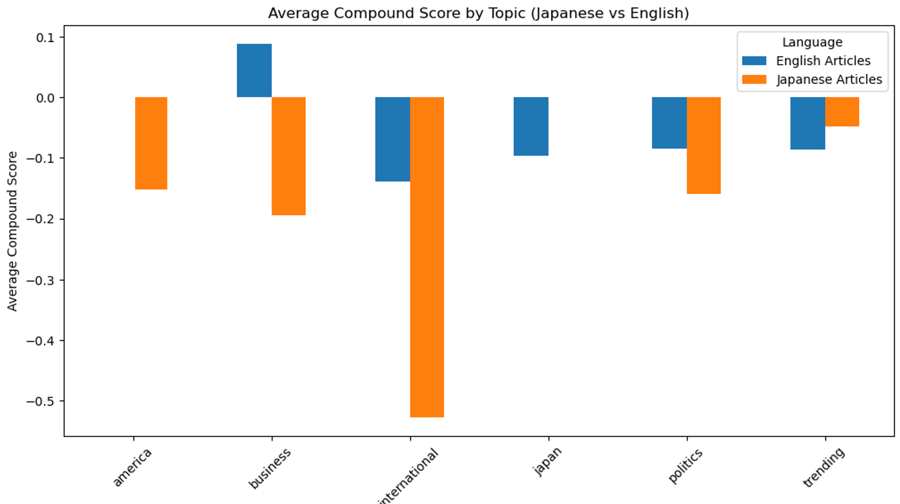
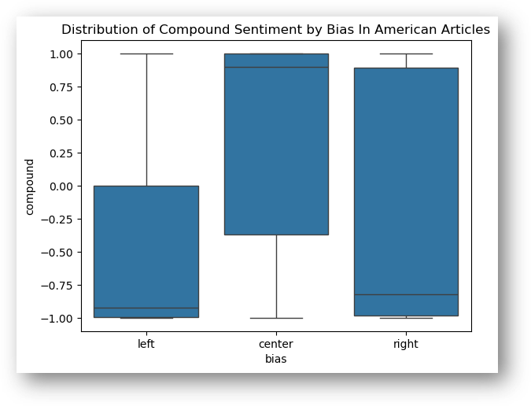
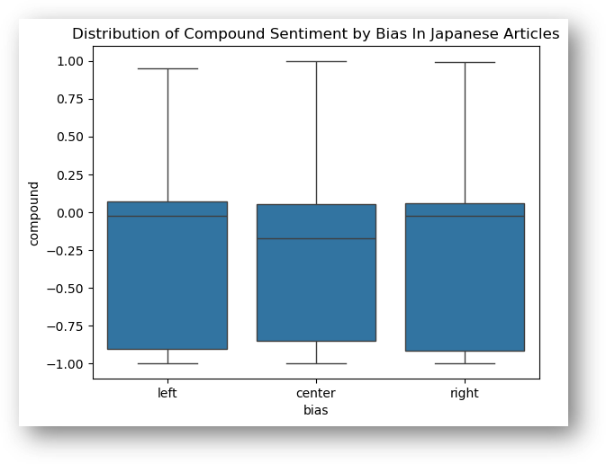
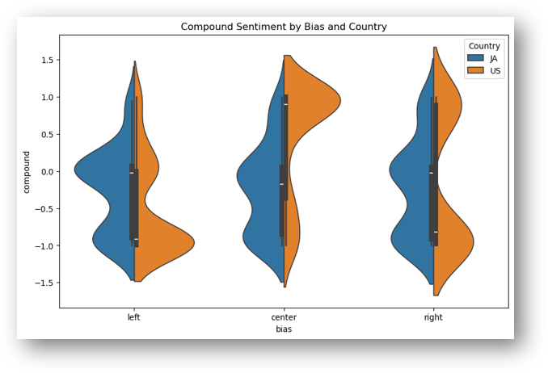
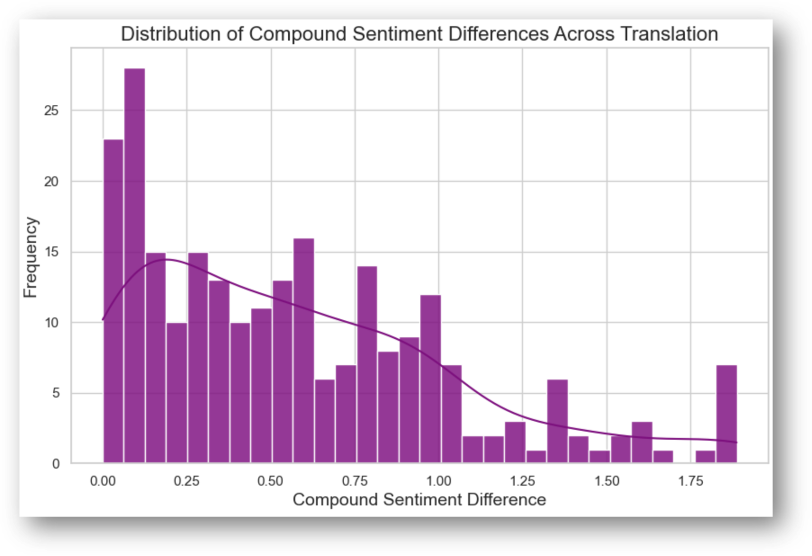
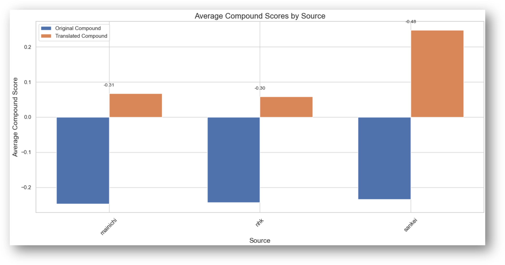
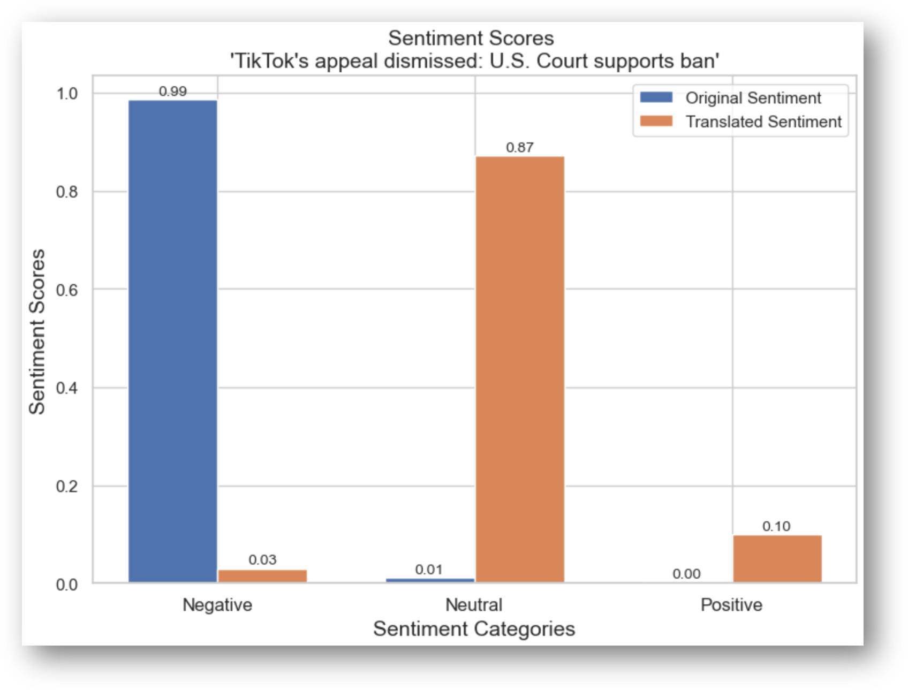

Sentiment Analysis
Although JANAS already provides you with several graphs to analyze the data you’ve just pulled, allow us to grant some analysis we have done with the data we retrieved and presented on December 10th, 2024. Below you can see a demonstration of the kinds of analysis available to you through JANAS. This unique data allows for a multitude of possibilities when it comes to analysis. Our presentation consisted of the following instance.
We are working with the Compound Score, which is a score calculated using our sentiment analysis algorithm explained in our methodologies section here
Compound Scores Across Countries
  
As seen in the figures above, you can notice that the scatterplot makes note of where the compound scores are the most dense within each country and the topic the articles are exploring. For example, in the first graph detailing how English articles portrayed certain topics, you’ll notice that there weren’t a lot of neutral-classified articles, meaning the sources pertaining to these topics were quite critical or emotional in some regard. Whereas, the Japanese articles tend to be more centralized in the neutral territories, with some outliers like the trending articles.
Overall, we can start to get a glimpse at how our sentiment scores are distributed across the two countries.
Country Sentiment at a Glance

This graph showcases a direct comparison of the average compound scross across the two languages and their news sources. Notice, we only scraped topics from the opposing countries’ views. In other words, we only have Japanese articles discussing America and American articles discussing Japan. This not only allows us to view topics with a direct comparison, but a more interesting question about how the other country is portrayed.
At this point in time, news in both America and Japan was fairly neutral, with the outlier of Japanese articles discussing international topics. There was a significantly low average when it came to international topics being discussed by Japan. Scores tended to center on a range of -0.2 to 0.1, which by our scores are very neutral, on average.
This indicates that the news around this time wasn’t as critical, or gave more of a holistic, non-emotional standpoint of the topics at hand. However, the outlier of the Japanese articles having to do with international topics could be correlated to current events. I.e., South Korea had just declared martial law and was in a state of chaos around the time this particular set of data was scraped, and thus, a lot of the international articles discussed that topic specifically, and a lot in a negative manner. Analysis like this allows us to gain a clearer picture of not just the media portrayals themselves, but how they explain current events around us, and the perception these news outlets are scripting onto them.
Sentiment Scores by Bias

When looking at the distribution of compound sentiment scores in american news outlets, we can gain a couple of takeaways. Firstly, confirmed by the previous section of analysis, American news sources tended to be very emotional, as shown by the extreme distributions, skewed either positively or negatively. Whereas, we can now see that the left and right-leaning news sources are particularly critical at this time. The neutral sources we used was more satirical, or positive, in this case. Across the spectrum, we don’t see a lot of neutral-leaning arguments, which we found very interesting.

Opposingly, looking at the Japanese articles reveals quite a different set of results. Here, we still get a wide range of scores, but the distributions of all the news sources in Japan tend to lean more negatives. Although, their center is around neutral territory, so even though all political sources are pretty consistent in their reporting, they also tend to have similar sentimental patters, at least during this news cycle period.
News Article Bias at a Glance

Our graph displays a violin plot to gain a holistic and empirical view of the densities in each countries’ news sources, across the political spectrum during this news cycle.
When looking at the blue density parts of the violin plot, having to do with Japanese articles, we see peaks in the distribution around scores of 0, with some variation or smaller peaks around lower scores. On the contrary, the American sources, indicated by the orange density plots, tended to be centered either around the negative compound scores (like shown in the left-leaning sources), positive compound scores (like shown in the center/neutral sources), or both (like shown in the right-leaning sources).
American news sources play on people’s emotions, whether they listen to negativity, positivity, or both. It’s not shocking that emotionally-charged media is what tends to draw eyes, as many studies have shown this to be true, and it’s nice to see that graphed out here in our analysis. We were quite shocked at how different this was compared to the Japanese news sources, and they typically congregated around a neutral standpoint, with a few outliers, of course. This may be due to Japan’s strict media potrayal restrictions.
Across Translation
As this team contains individuals who can speak Japanese (Trey & Satomi), this project had more to do than just compare America vs. Japan and their new source’s sentiment or how certain topics were portrayed. A crucial NLP dilemma is the thought of translation, and creating a scalable solution to bridge the gap in linguistical differences beyond borders.
This is another question we kept in mind to investigate as a part of this project. How much does sentiment scores differ across translated news?.
Utilizing Hugging Face (detailed out here), we were able to gain translations of our Japanese articles, and filter them through two different sentiment algorithms, comparing the differences in their scores. The insights, analysis, and takeaways can be seen below.

In order to capture how different the two sentiment scores were between the two, we took their direct differences and plotted that kernel density above. Although a lot of our articles didn’t have much of a difference, indicated by the right-skew and high density towards lower differences in their scores, that doesn’t mean there wasn’t a difference at all. There were quite a lot of articles that indicated a change in difference when converting languages, some even up to 2 points, which is an entire emotion. That means there were articles that switched emotions, losing a lot of linguistic power and explainability when utilizing translation efforts.

Looking at these direct scores side-by-side in the above bar char, we can see a lot of these differences across sources directly. Looking to how the translations differ, we can see that intiially, the Japanese articles (in Japanese) were quite negative, but we already knew that. What we gain from this graph is that the translations and English sentiment of these Japanese articles is vastly different and event misconstrues this information entirely. For example, our left and central-leaning sources just got classified as more neutral than negative when we translate them. This indicates how nuanced the Japanese language is, and how the translations can’t capture the tonality of some of these statements. That, however, isn’t as serious as the 産経新聞 (Sankei Shinbun) sources, where it takes the negative sentiment, and actually classifies it as positive when looking at the English-translated text. This is quite dangerous territory as can lead to some serious miscommunications between actionable individuals when discussing international ties and relations.
These insights were also checked by Satomi and Trey. We can view this through a specific case-study, or example displayed below.
Tik Tok Case-Study

As a physical example of this, we pulled one of the stories with the biggest change in sentiment and tried to explain why this happened. A majority of these stories were very politically charged. Pictured above is one of the these top stories, discussing the recent (at this time) TikTok appeal, attempting to prevent the United States from banning the popular social media app (source: 毎日新聞 (Mainichi Shinbun, or the left-leaning Japanese newssource)). This bar chart explains how it was specifically classified and the differences in sentimentality.
As you can see, the article, under our VADER model, the original Japanese text was very negatively charged. This, makes sense, as the Japanese title of this article was TikTokの訴え却下 米高裁、事業禁止法を支持, which if you didn’t know, actually means something along the lines of “TikTok Appeal Rejected, the U.S. Supreme Court upholds anti-business laws and practices”. Reading that, it’s very jarring, targeted, and blunt, retrieving it’s earned negative classification. Whereas, when translated, the topic reads TikTok’s appeal dismissed: U.S. Court supports ban, which is much more passive. This is a prime demonstration in how the multi-faceted nuances of Japanese can literally get lost in translation.
This means that when it comes to more emotionally-charged material in Japanese, translating the text can be quite dangerous, as you will never get the full picture on any linguistic-related content. More specifically, news sources won’t be as reliable, as its tone will completely change across sources. News is one of the prime spots for information retrieval and current events. Not knowing how to receive this information or what it speaks to about the country or news source as a whole is an NLP gap we need to bridge. This calls to action both the need for much more detailed translating algorithms as well as language training. Without knowing multiple languages, it’s difficult to get the full picture on media portrayal, and relying on shawty translations can lead to miscommunicated and poor insights.